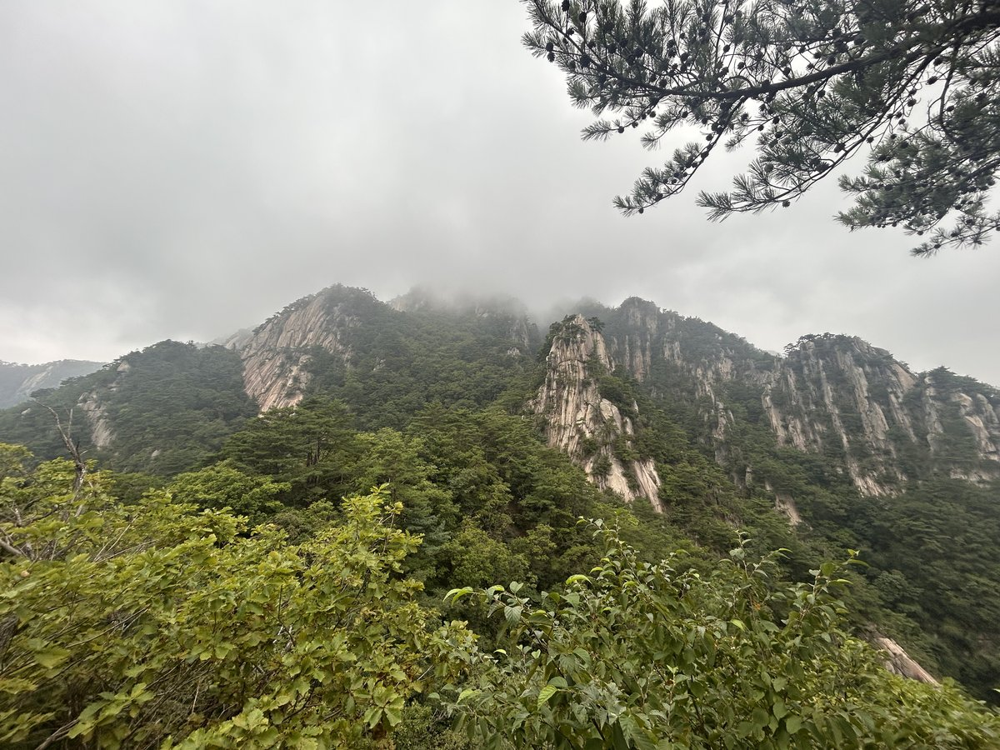
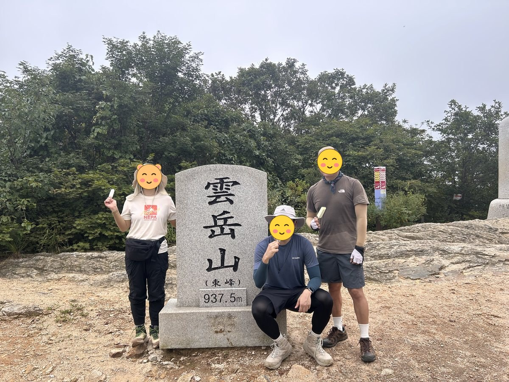
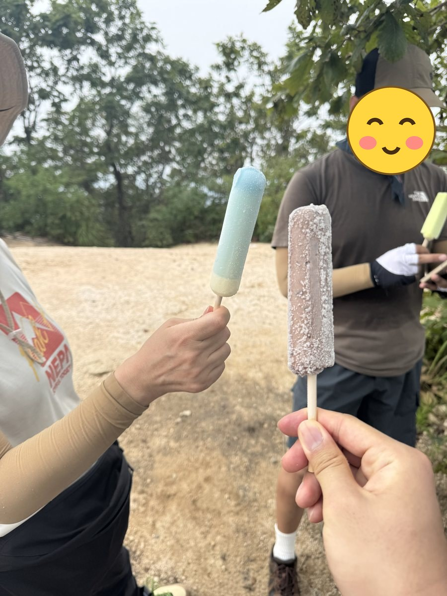
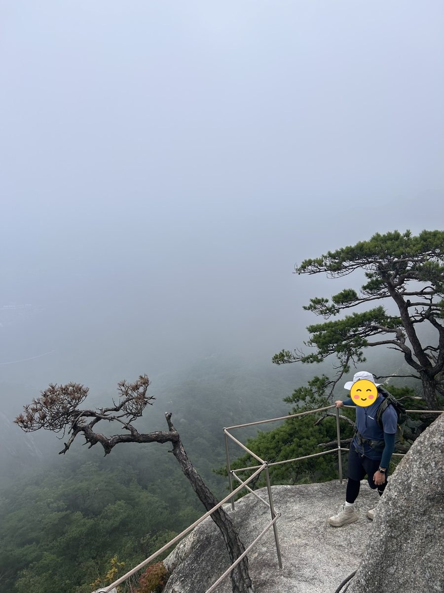
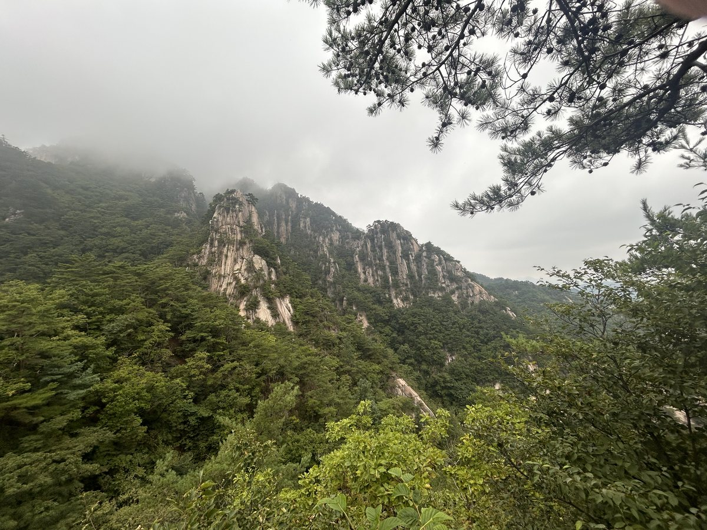
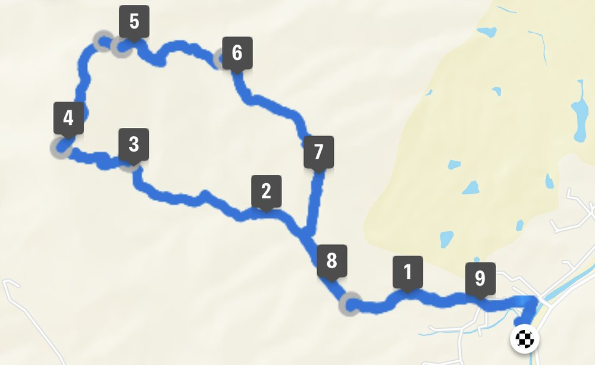

운악산은 가평과 포천의 경계에 있는 산으로, 만경대를 중심으로 암봉들이 구름을 뚫고 솟은 모습에서 이름이 유래했습니다. 경기 5악 가운데 암릉미가 가장 뛰어나다는 평이 많습니다.
대표 코스는 가평 쪽 주차장에서 출발해 눈썹바위·병풍바위·미륵바위·만경대를 지나 동봉과 서봉을 밟고 현등사로 내려오는 10.3km 순환입니다. 5시간 20분 정도 걸립니다.
현등사와 출렁다리를 지나 만경대로 붙는 짧은 코스는 2시간 30분 정도입니다. 다만 악산답게 암릉과 급경사가 계속되니 거리만 보고 판단하면 안 됩니다.
등반기록
운악산 주차장 → 현등사 → 절고개 → 운악산 정상(동봉) → 만경대 → 미륵바위 → 병풍바위 → 눈썹바위 → 운악산 주차장
서울에서 가까운 운악산, 큰아들과 함께
이번 산행은 큰아들이 함께했습니다. 서울에서 가까운 산이라 부담 없이 나설 수 있었고, 토요일 아침 8시 12분에 가평 쪽 운악산 주차장에서 출발했네요.
코스는 현등사를 거쳐 절고개로 올라 정상(동봉)을 찍고, 만경대·미륵바위·병풍바위·눈썹바위 능선으로 내려오는 원점회귀로 잡았습니다.
현등사를 지나 정상 동봉 937.5m
9시쯤 현등사를 지나고 10시 20분쯤 절고개에 올라선 뒤, 10시 45분에 정상 동봉에 도착했습니다. 날씨가 조금 흐려서 정상 조망은 아쉬웠네요.


하산길에 만난 구름과 기암절벽
하산은 만경대 쪽 바위 능선으로 잡았습니다. 올라올 때는 흐려서 아쉬웠는데, 내려오는 길에 구름 사이로 기암절벽이 모습을 드러내더군요. 이 풍경이 운악산의 일품인 것 같습니다.


주차장으로 원점회귀
14시 14분에 주차장으로 돌아왔고, 총 9.49km에 6시간 2분이 걸렸습니다.

날씨가 조금 흐려서 아쉬운 감이 있었지만, 구름 사이로 보이는 기암절벽이 일품인 산이었습니다. 서울 근교 산 중에서는 볼거리가 많은 산 중 하나인 것 같네요.
이 산의 포인트
- 만경대 — 운악산 이름의 유래가 된 암봉
- 병풍바위·미륵바위·눈썹바위 등 연이은 기암
- 동봉과 서봉 두 개의 정상
- 경기 5악 중 암릉미 최고라는 평
등산 코스
| 코스 | 거리 | 소요 | 난이도 |
|---|---|---|---|
| 가평 원점 순환 (대표) 운악산 주차장 → 눈썹바위 → 병풍바위 → 미륵바위 → 만경대 → 동봉 → 서봉 → 남근석 → 절고개 → 현등사 → 주차장 |
약 10.3km | 5시간 20분 | 상 |
| 현등사 → 만경대 코스 운악산 입구 → 현등사 → 출렁다리 → 병풍바위 → 미륵바위 → 만경대 → 정상 |
약 4km(편도) | 2시간 30분 | 중 |
인증장소
운악산 정상(동봉) 표지석 앞에서 인증합니다. 동봉과 서봉이 따로 있으니 확인하세요.
가는 길
- 자가용
- 가평 운악산 주차장 또는 포천 방면 주차장을 이용합니다.
- 대중교통
- 가평·포천에서 버스로 접근할 수 있으나 배차가 드뭅니다.
주차장
- 운악산자연휴양림 주차장(현등사 방면)경기 가평군 조종면 운악리
가평 쪽 대표 들머리입니다. 암릉과 쇠난간이 이어지는 급경사 코스입니다.
- 운악산 주차장(포천 화현)경기 포천시 화현면 화현리
포천 쪽 들머리로 상대적으로 한산합니다.
주차 요금과 면수는 자주 바뀌고 성수기에는 임시 주차장·셔틀이 운영되기도 합니다. 출발 전에 지도 앱이나 공원 사무소로 한 번 더 확인하세요.
맛집
가평·포천 경계입니다. 가평 쪽은 잣과 닭갈비, 포천 쪽은 이동갈비와 이동막걸리입니다. 현등사 입구에는 순두부와 우렁쌈밥 집이 있습니다.
- 할머니순두부들머리에서 4.7km경기도 포천시 내촌면 금강로 3215
- 사랑굿숯불닭갈비막국수들머리에서 5.5km경기도 가평군 운악청계로 419 사랑굿 오리꽥꽥
- 원조우렁쌈밥순두부들머리에서 4.7km경기도 포천시 내촌면 금강로3224번길 10
- 운악산한함지들머리에서 2.0km경기도 포천시 화현면 달인동로 201
- 서파장어랜드들머리에서 4.6km경기도 포천시 내촌면 금강로3224번길 11
한국관광공사에 등록된 음식점입니다. 맛집 순위가 아니며, 영업시간과 휴무일은 바뀔 수 있으니 먼 길이라면 미리 전화해 보세요.
언제 가면 좋은가
가을 단풍과 암릉의 조합이 가장 좋습니다. 겨울 결빙기에는 암릉 구간이 위험하고, 비 온 뒤에는 바위가 매우 미끄럽습니다.
알아두면 좋은 것
- 암릉과 급경사가 많아 거리에 비해 시간이 오래 걸립니다.
- 등산 장갑과 접지력 좋은 등산화를 권합니다.
- 가평 쪽과 포천 쪽 들머리가 다르니 하산 지점을 미리 정하세요.